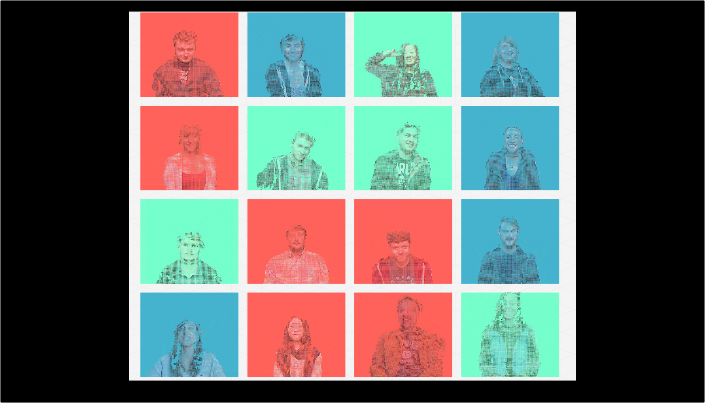

You've been framed

"You've been framed" is a digital media project centered on Kinect programming computer vision. The installation is composed by a Kinect camera that runs through an open source library, namely OpenNI, in Processing and a computer. The interactive control stimulates the presence of an object and an individual in front of the Kinect. Then, the program reads the data sent from the depth sensor, which is attached on the Kinect, it applies a textual texture on the present figures, and it outputs the results live on the computer screen.
My eagerness for computer vision depends on my desire as an artist to explore the ways individuals relate themselves with a recording medium while knowing that they are observed and I hope to awake the participants' imagination in the digital realm, transforming the physical world.